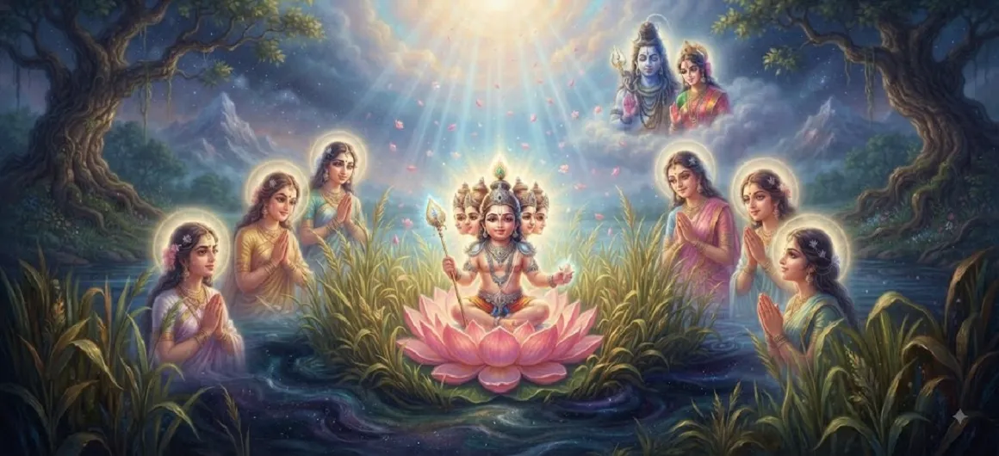

The Birth of Kumāra
The twelfth chapter of the Kumara Khanda chronicles the supreme climax of the epic: the glorious and miraculous manifestation of Lord Kumara from the sacred reed bed of Saravana.
Radiating blinding celestial splendor and majestic power, the divine child steps forth as the ultimate commander of the celestial hosts, fulfilling the prayers of the universe.
Chapter 12 Highlights
Divine Manifestation
The miraculous appearance of Lord Skanda from the reeds.
Shanmukha Form
The glorious infant shining with six divine faces.
Blinding Radiance
A celestial aura that outshines thousands of suns.
Heavenly Rejoicing
Deities and sages showering flowers and chanting praises.
Commander's Arrival
The destined leader of the devas ready to vanquish adharma.
Next Chapter Transition
Setting the stage for nurturing by the Krittikas.
Core Topics in This Chapter
- 01The Miraculous Manifestation in Saravana→
- 02The Peerless Form and Six Faces of Skanda→
- 03Rejoicing Across the Three Worlds→
- 04Hymns of Praise by Brahma and Indra→
- 05Restoration of Cosmic Order and Hope→
- 06The Unmatched Majesty of the Divine Child→
- 07Transition to Chapter 13 (The Krittikas Nurture the Child)→
The Miraculous Manifestation in Saravana
At the appointed hour, from the heart of the glowing reed-bed, the divine energy condenses into a magnificent infant form, illuminating the entire cosmic space.
This birth defies earthly laws, arising purely from supreme divine consciousness.
The Peerless Form and Six Faces of Skanda
The newborn child is endowed with six radiant faces (Shanmukha), symbolizing his ability to look in all directions and absorb the oblations offered by the diverse cosmic forces.
His body shines with ornaments made of pure celestial light.
Rejoicing Across the Three Worlds
As soon as Kumara is born, celestial drums echo through the heavens, celestial nymphs dance in ecstasy, and showers of sweet-scented flowers rain down from the sky.
A wave of boundless joy sweeps through the three worlds.
Hymns of Praise by Brahma and Indra
Lord Brahma, Indra, and the gathered deities bow in profound reverence before the infant warrior, chanting powerful Vedic hymns praising his supreme might and grace.
They acknowledge him as their savior and undisputed commander.
Restoration of Cosmic Order and Hope
The darkness caused by Tarakasura's oppression begins to recede as the glorious light of Kumara instills unwavering hope and strength in the hearts of the gods.
Righteousness finds its ultimate champion.
The Unmatched Majesty of the Divine Child
Though an infant in form, Kumara exudes the wisdom of the Vedas and the martial prowess of Shiva, standing ready to fulfill his cosmic destiny.
The universe witnesses the dawn of a new era of protection.
Transition to Chapter 13 (The Krittikas Nurture the Child)
Following his wondrous birth in Saravana, the narrative flows directly into Chapter 13, where the noble Krittikas step forward to embrace and nurture the divine infant.
The touching chapter of maternal love unfolds.
Key Teachings of Chapter 12
Triumph of Light
Divine consciousness always dispels darkness and oppression.
Destined Purpose
Every grand spiritual milestone fulfills a higher cosmic plan.
Reverence & Praise
Recognizing and honoring divine grace brings supreme peace.
Ultimate Protection
Righteous forces are never left without a defender.
Universal Joy
The birth of truth brings universal celebration.
Seamless Flow
Manifestation naturally transitions into nurturing care.
Spiritual Reflection
The birth of Kumāra teaches us that when spiritual inner preparation is complete, the light of truth breaks through all obstacles with blinding brilliance. Just as Skanda emerged to restore order, divine wisdom within us overcomes all inner confusion.
Living the Message of Chapter 12
Celebrate personal spiritual breakthroughs with gratitude, humility, and dedication to righteousness.
Trust that inner divine strength will manifest when facing challenging life obstacles.
Maintain an attitude of reverence toward higher universal truths and protectors.
Key Spiritual Concepts
The glorious manifestation of the six-faced divine infant.
The blinding, magnificent radiance of cosmic consciousness.
The ecstatic celebration and rejoicing of the deities.
The sacred hymns of praise offered by Brahma and Indra.
The supreme protector and commander of righteousness.
The grand cosmic festival of Lord Kumara's birth.
Chapter Summary
Kumara Khanda Chapter 12 details the magnificent birth of Lord Kumara (Skanda) from the reed-bed of Saravana, highlighting his six-faced radiant form, the joyous celebrations of the deities, and his advent as the supreme protector of the universe.
Frequently Asked Questions
1. What is the primary focus of Kumara Khanda Chapter 12?
Chapter 12 focuses on the magnificent manifestation and birth of Lord Kumara (Skanda/Karthikeya) from the sacred bed of reeds in Saravana.
2. How does Lord Kumara appear at birth?
He appears radiant, endowed with supreme divine splendor, six faces (Shanmukha), and unmatchable celestial radiance that illuminates the entire universe.
3. How do the celestial deities react to the birth?
The gods, sages, and celestial musicians rejoice, showering flowers, playing drums, and singing hymns of praise for the divine commander.
4. What is the next chapter after Chapter 12?
The next chapter is titled 'The Kṛttikās Nurture the Child'.
“From the quiet cradle of the sacred reeds, the supreme commander of light emerged, banishing darkness and restoring eternal hope to the cosmos.”
Continue Through Kumara Khanda
Chapter 12 celebrates the magnificent birth of Kumara. Continue to the next chapter, The Kṛttikās Nurture the Child.